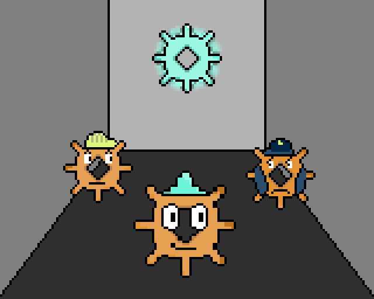
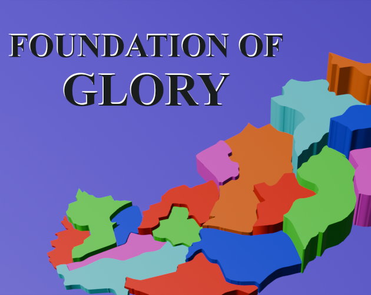
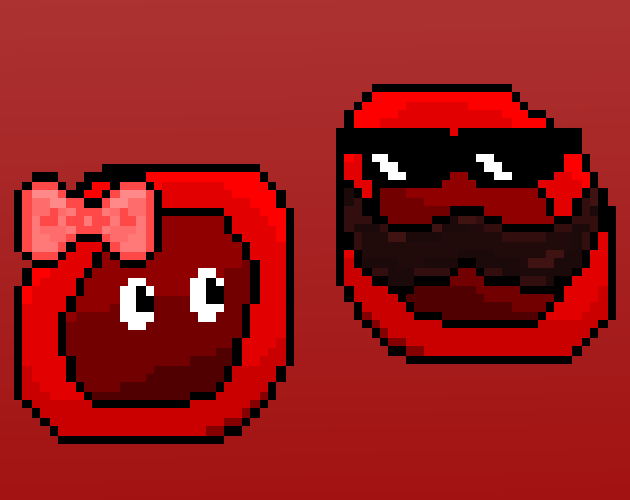
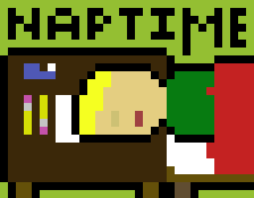
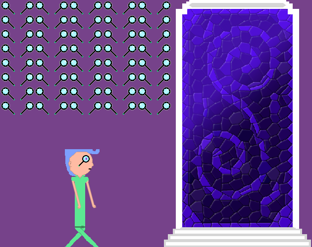

Mini MutinyMini Mutiny is my most recent game, it was made for Ludum Dare 56 Compo in 48 hours and entirely alone. To me, this game marked a really large growth in my ability and potential as I was able to really conceptualize and create the game based on my vision! The idea I had was to have a game with a day/night cycle where the day was focused on getting your task done to survive while the night is where you progressed towards the goal. I struggled in the first day to get the jump to feel right and instead of spending too much time focusing on that, I removed the jump from the game and added climbable ladders to keep a sense of verticality, I believe this was a huge step for me in finding alternative routes instead of focusing on dead ends! |

Foundation Of GloryFoundation Of Glory was a weird game to make, it was made for the GMTK Game Jam 2024 in 4 days by me and a partner. The theme of the jam (built to scale) with the explanation from the host didn't instantly lead to ideas like many of the other jams, but with my partner, we settled on challenging ourselves technically with a 3D map and mechanics similar to the board game, RISK, with the added complexity that is achievable with a video game! The game came out relatively unpolished but for the time constraint and the complexity of the game, I wasn't disappointed! This game challenged me in new ways such as using Unity's Shader Graph to create a custom shader that highlights clicked territories and a somewhat simple enemy behaviour that can make decisions and expand territory as well as logic to make every game unique! We also challenged ourselves to make a game with endings rather than winning or losing to make every playthrough impactful. The game has a short timer to play which comes from past mistakes in making games too long for the average game jam judge and player to consume and enjoy! |

Feel The FireFeel The Fire was meant to be practice for taking on bigger game jams after graduating college, it was made for MelonJam 5 in 3 days with a team consisting of me and one other person. The game absolutely taught me a lot of lessons in hindset, particularly about lenience with players especially in a game jam setting where most players only try out the game for 5-10 minutes maximum. I learned from writing for this game just how hard writing can be when you aren't sleeping much on a crunch schedule. Feel The Fire was the first game I created that was built for web which was a great and simple learning experience that I utilized heavily in subsequent game jams. The song used for all the racing in-game was created by my friend who's a musical artist and really adds to the personality and the special place this game holds in my heart. The big surprise after this game jam was just how much I fell in love with this piece of work, this game was shockingly better than what I believed I was capable of and inspired me to continue on the journey of making games. |

NaptimeNaptime was made for the 2nd St Lawrence College Game Jam in 36 hours and alone. Naptime was my biggest disappointment so far in my game making journey, but through the disappointment, I learned a ton about time management. I made Naptime to try and clinch the first place trophy of the jam because I had previously taken second place. During the second half of the jam, I didn't budget nearly enough time and bounced constantly from idea to idea without solidifying the basics of the game, as a result the game is unfinished and practically unplayable. Despite the resulting game, I learned how to do art much better in order to make this game alone, I definitely lost too much time to art but it proved to be a useful skill in game jams much further down the line where I used my time better than this one. Due to a weaker showing at this specific jam, Naptime earned third place and I took home a bronze trophy! |

Velocity VortexVelocity Vortex was made for the inaugural St Lawrence College Game Jam in 36 hours by a team consisting of me and 2 others. We created Velocity Vortex in my final year of college and it was the first time I had ever created a game for release. The game is fairly unpolished and employs a lot of "band-aid" solutions to bugs that would be much easier for me to fix now. Velocity Vortex is a deeply flawed first game but it taught me a lot and I studied it heavily afterwards to learn many more lessons from it! Velocity Vortex ended up earning second place in the game jam, and a silver trophy. Falling just shy of first was painful for me but beyond that, it was helpful as I could quickly identify what other games brought to the table and where our game had fallen short which still inspires changes and extra polish in every single game jam I've done since! |